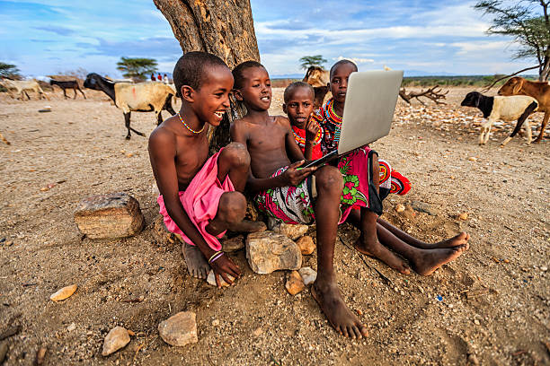
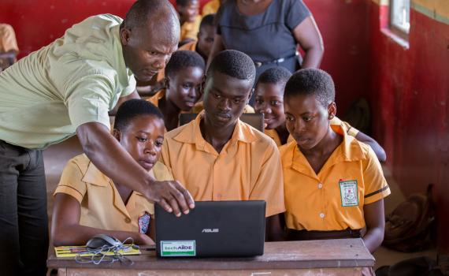

This is an association organised by the UN Women located in lango sub region ,lira district at Magarita Palace Hotel Limited
The langi girls can advance in the the digital world only if hands are joined together.
These girls intend to advance in tech but they are still facing alot of challenges.
Lack of training facilities where by the girls learn from a rental which is not all that safe and stable. This makes it difficult for the training to move on smoothly.
Lack of enough training equipments computer which aren't enough for all the girls like projectors and other ict devices.
The internet connection in the area is so poor in that it makes it difficult to access the internet.
There is unstable power supply that affects the praticals.This is normally affected by some weather conditions like rainy weather.
Lack of reliable data to simplify the internet use in the fasilities.
Lack of well trained technicians for the repairment incase of any damage happening to the computers.
Lack of strong and long lasting spare parts.
Few network boosters.
Few facilators that makes impacting the knowledge of ICT a little bit slow.
We intend to construct our own training facility so that ICT can be studied in a stable place.
Installation of WIFI for easy access to the internet.
Purchasing equipments like computers,projectors;etcetra.
Having a standby generator and solar for power supply.
Recruiting a repair technician for repairing the laptops and also provideing original spares.
UNITED WE STAND ,DIVIDED WE FALL